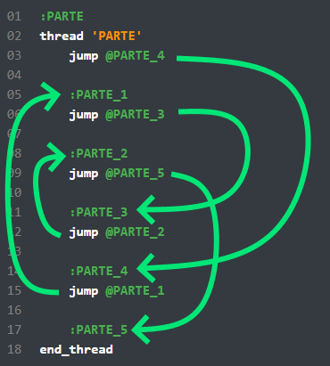

##### ¿Comó iniciamos?
.
Con el SB abierto, hasemos click en Archivo -> Abrir... y buscamos el main.scm en la carpeta del juego en: /data/script/, sin olvidar indicar el formato **SCM** en el filtrador de archivos. De lo contrario, no te aparecerá.
.
|dan Hagan copia de seguridad del main.scm y script.img
.
Ya lo abriste? Viste la cantidad de líneas que hay? Te dejan sin aliento, verdad? Imagina el tiempo que tomo!
.
Bueno, seleccionemos todo con CTRL+A y presionaremos CUALQUIER TECLA para borrar todo.
.
Ahora que el script(guión en español) está vacío, ya puedes hacer algo por tu cuenta! Pero para trabajar en el guión, mínimo debes proporcionar algo información obligatoria.
.
Copia estas líneas:
.
Luego compile el script e inicie el juego.
|dan Al editar el script principal, deben iniciar una nueva partida.
De seguro la mayoría de ustedes se han dado cuenta de que no hay intro ni objetivos.
|inf Esto por que la ejecución de todos estos comienza en el 'MAIN'.
#### ¿Qué es un procedimiento?
Digamos que es un bloque separado en el que se realizan algunas acciones a través de un flujo de lectura.
.
Estos al igual que las personas, tienen su propio nombre.
|dan No puede crear 2 procedimientos con un mismo nombre, tampoco con más de 15 caracteres, ni con letras fuera del Ingles.
.
Estos los recomiendo que lo hagan con 7 carácteres.
#### ¿Qué es un flujo?
Por empezar, cada procedimiento ya se crea con un flujo.
.
Estos se inician con un mismo comando:
.
Aquí 'EJEMPLO' es el nombre de nuestro flujo, y lo finalizamos con este comando:
.
Creo que estos comandos son muy fáciles de recordarár
#### ¿Qué es una etiqueta?
En resumen las etiquetas forman la base de la codificación.
.
Nos permite no solo crear pequeñas regiones de codigo para algo, sino tambien como punto de redirección para la manipulación de condiciones y bucles.
##### Sintaxis
```txt
:<name><id>```
- `name` : Cualquier nombre para región.
- `id` : Cualquier identificador para región.
```sb3
:EJEMPLO```
|dan Si borras el codigo fuente, estas se formatean sigiendo sintaxis estandar.
Desde un punto de vista técnico, la etiqueta es un desplazamiento en el archivo main.scm y representa un número normal. En otros asuntos, esto no es importante para nosotros, ya que SB calcula todos los resultados por su cuenta, según nuestras etiquetas.
.
Un buen ejemplo de como escribir un flujo con etiquetas, sería el siguiente:
.
Todos los scripts se basan en una línea de información para la lectura. Es decir, que un comando va en una sola línea.
.
En el ejemplo, se muestra que primero se ejecutará los comandos de la etiqueta :PARTE_1, luego :PARTE_2 y después :PARTE_3.
|inf Naturalmente, puede cambiar el orden de las etiquetas, sin cambiar su posición.
Para esto, sirve el comando jump. Si lo traducimos literalmente, esto significa Saltar. A continuación, usaremos esta expresión. Bueno, primero escribire un ejemplo donde se usan saltos:
.
Dificil, no?
.
Imaginemos una bolita y llamémosle "Puntero".
.
Bueno esta bola tiene un cierto camino por recorrer. Nuestra bola comienza su camino desde el nombre del procedimiento, es decir, desde el comando thread, y comienza a bajar.
.
Usando indicaciones, puedes hacer saltos de esta forma:
.

.
Entonces, viste la pelota. Lo azul y naranja indica exactamente como se esta dirigiendo la pelota. Subí especialmente esta imagen para que te sea más fácil imaginar cómo funcionan los scripts. Si la pelota llega al punto final, se envía automáticamente a una pensión bien merecida y no se utilizará más en la corriente hasta que se vuelva a poner en servicio. :)
.
¿Cómo iniciar un procedimiento y qué se necesita para que funcione correctamente? Buena pregunta. ¿La palabra wait te dice algo? Bueno, creo que es hora de familiarizarse con los opcodes.
.
¡Estos son nuestros fieles ayudantes! Los llamaremos así, porque ayudan a realizar algunas acciones. Para que funcione correctamente, debemos recordar el ayudante llamado 0001: , es decir, el opcode:
.
Suele aparecer después del nombre de la etiqueta. No siempre deben estar ahí, sino solo en casos de necesidad, por ejemplo, en ciclos (se considerarán en las próximas lecciones). Pero para fines de capacitación, colocaremos el opcode después de cada etiqueta.
.
Técnicamente, no hay diferencia entre los opcodes y los comandos: el comando tiene una sintaxis simplificada, pero se reemplaza con un opcode durante la conversión. Un opcode(código de operación) es un comando(código operativo)
.
Para iniciar nuestra lectura, es decir, para llamar a nuestra bola para que comience, se usa el siguiente comando:
.
PARTE es el nombre del procedimiento para comenzar
.
De hecho, activa el flujo. Por lo tanto, escribimos el inicio correcto del procedimiento
.
Por supuesto, nuestro ejemplo no tiene sentido, pero creo que ha adquirido la experiencia necesaria en la escritura de flujos.
|dan El comando para iniciar el procedimiento se debe dar en el procedimiento activo , de lo contrario, ¡el procedimiento no se iniciará!
.
En nuestro caso, el procedimiento se llama desde el procedimiento activo 'MAIN', y cuando el procedimiento se inicia con el comando thread, entonces el procedimiento llamado se activa, por así decirlo, se llama cuando la bola está en progreso :)
|inf Sanny Builder ignora las líneas en blanco y solo son cosméticas.